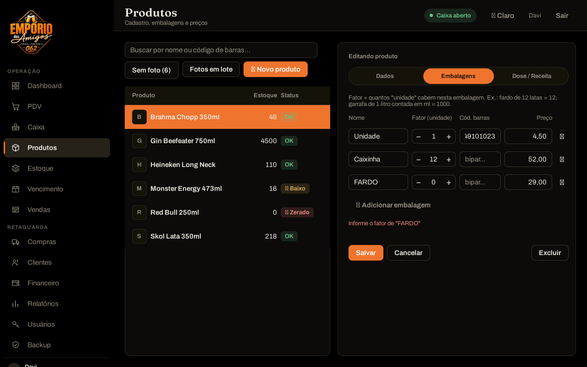

Correção 1 · Cadastro
Embalagem nova não nasce mais com fator 1
Como era
A linha nova já vinha com fator 1. Salvava calado, e a caixinha passava a baixar 1 lata por venda.
Como ficou
Nasce vazia e o sistema recusa salvar enquanto o fator não for informado, explicando o que é o fator.

Verificado por tst_produto_repository::fatorDeEmbalagemConferido e tst_correcoes.qml — o teste falha com o código antigo.